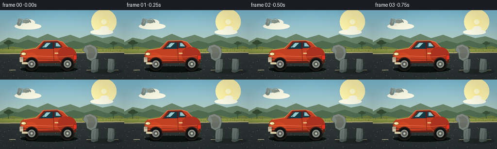
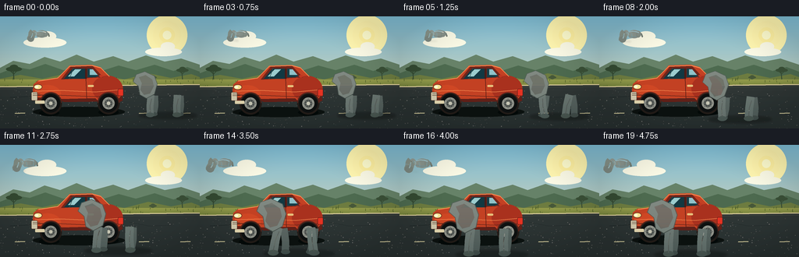
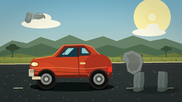
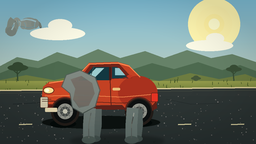
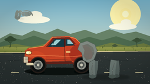
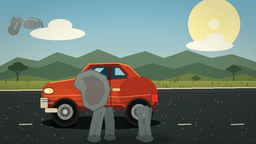

CODING AGENTS AS PIXEL WORLD MODELS
traex/DeepSeek-V4.1-Flash · dynamic_spatial_relationship_0067
点击播放 · 原生 RGB 像素
逐轮保存的候选
回放视频、检查图与代码变化。
每份候选均可单独播放。实际图片检查记录在下方工具轨迹中。
候选 01播放与检查图
点击播放 · 原生 RGB 像素


展开代码变化
--- 上一保存版本
+++ 本次保存版本
@@ -0,0 +1,506 @@
+from __future__ import annotations
+
+import math
+from pathlib import Path
+
+import av
+import numpy as np
+from PIL import Image, ImageDraw, ImageEnhance, ImageFilter
+
+import artifact_io
+
+
+WIDTH = 256
+HEIGHT = 144
+FRAMES = 20
+FPS = 4.0
+S = 4
+W = WIDTH * S
+H = HEIGHT * S
+
+
+def scaled(value):
+ return int(round(value * S))
+
+
+def box(values):
+ return tuple(scaled(value) for value in values)
+
+
+def points(values):
+ return [(scaled(x), scaled(y)) for x, y in values]
+
+
+def smoothstep(value):
+ value = max(0.0, min(1.0, value))
+ return value * value * (3.0 - 2.0 * value)
+
+
+def lerp(a, b, t):
+ return a + (b - a) * t
+
+
+def vertical_gradient(top, bottom, size=(W, H)):
+ height = size[1]
+ t = np.linspace(0.0, 1.0, height, dtype=np.float32)[:, None, None]
+ a = np.asarray(top, dtype=np.float32)[None, None, :]
+ b = np.asarray(bottom, dtype=np.float32)[None, None, :]
+ row = a + (b - a) * t
+ return np.repeat(row, size[0], axis=1).astype(np.uint8)
+
+
+def ellipse(draw, xy, fill, outline=None, width=1):
+ draw.ellipse(box(xy), fill=fill, outline=outline, width=scaled(width))
+
+
+def rounded(draw, xy, radius, fill, outline=None, width=1):
+ draw.rounded_rectangle(
+ box(xy),
+ radius=scaled(radius),
+ fill=fill,
+ outline=outline,
+ width=scaled(width),
+ )
+
+
+def polygon(draw, xy, fill, outline=None, width=1):
+ draw.polygon(points(xy), fill=fill, outline=outline, width=scaled(width))
+
+
+def line(draw, xy, fill, width=1, joint="curve"):
+ draw.line(points(xy), fill=fill, width=scaled(width), joint=joint)
+
+
+def arc(draw, xy, start, end, fill, width=1):
+ draw.arc(box(xy), start, end, fill=fill, width=scaled(width))
+
+
+def composite_gradient(image, mask, top, bottom, alpha=255):
+ gradient = Image.fromarray(vertical_gradient(top, bottom, image.size), "RGB").convert("RGBA")
+ if alpha != 255:
+ gradient.putalpha(mask.point(lambda value: value * alpha // 255))
+ else:
+ gradient.putalpha(mask)
+ image.alpha_composite(gradient)
+
+
+def make_background():
+ image = Image.fromarray(vertical_gradient((126, 183, 205), (237, 218, 178)), "RGB").convert("RGBA")
+ draw = ImageDraw.Draw(image, "RGBA")
+
+ # Soft sun and high clouds.
+ for radius, color in (
+ (26, (255, 240, 177, 20)),
+ (18, (255, 238, 174, 28)),
+ (10, (255, 235, 164, 62)),
+ (5.5, (255, 247, 205, 205)),
+ ):
+ ellipse(
+ draw,
+ (214 - radius, 24 - radius, 214 + radius, 24 + radius),
+ fill=color,
+ )
+ for cloud_box in ((30, 27, 85, 40), (48, 19, 72, 32), (186, 40, 233, 51), (206, 33, 224, 44)):
+ ellipse(draw, cloud_box, fill=(245, 244, 226, 54))
+
+ # Layered dry-season hills.
+ polygon(
+ draw,
+ [(0, 66), (17, 57), (38, 61), (57, 52), (77, 58), (98, 49), (120, 58),
+ (145, 51), (164, 58), (187, 50), (211, 58), (232, 54), (256, 62), (256, 86), (0, 86)],
+ fill=(105, 130, 106, 255),
+ )
+ polygon(
+ draw,
+ [(0, 73), (20, 65), (38, 68), (58, 61), (81, 69), (108, 63), (130, 70),
+ (152, 63), (174, 69), (198, 62), (222, 70), (240, 65), (256, 71), (256, 91), (0, 91)],
+ fill=(81, 107, 83, 255),
+ )
+ polygon(
+ draw,
+ [(0, 80), (26, 75), (54, 80), (82, 74), (105, 81), (133, 75), (159, 81),
+ (190, 73), (219, 79), (245, 74), (256, 78), (256, 97), (0, 97)],
+ fill=(111, 124, 70, 255),
+ )
+
+ # Acacia silhouettes give the scene scale without competing with the actors.
+ def acacia(x, y, size, color):
+ line(draw, [(x, y), (x - 1, y - size * 0.62)], fill=color, width=1.2)
+ line(draw, [(x, y - size * 0.47), (x - size * 0.25, y - size * 0.68)], fill=color, width=1.0)
+ line(draw, [(x, y - size * 0.5), (x + size * 0.24, y - size * 0.73)], fill=color, width=1.0)
+ ellipse(draw, (x - size * 0.42, y - size * 0.86, x + size * 0.40, y - size * 0.61), fill=color)
+ ellipse(draw, (x - size * 0.22, y - size * 0.96, x + size * 0.20, y - size * 0.71), fill=color)
+
+ acacia(18, 86, 25, (57, 77, 55, 225))
+ acacia(234, 83, 19, (63, 83, 60, 210))
+ acacia(196, 87, 12, (74, 89, 62, 150))
+
+ # Grass shoulder.
+ grass = vertical_gradient((147, 154, 81), (89, 107, 53), (W, scaled(18)))
+ image.paste(Image.fromarray(grass, "RGB").convert("RGBA"), (0, scaled(81)))
+ rng = np.random.default_rng(23)
+ for _ in range(150):
+ x = rng.uniform(0, WIDTH)
+ y = rng.uniform(80, 99)
+ length = rng.uniform(0.8, 3.2)
+ color = (68, 84, 42, int(rng.uniform(55, 135)))
+ line(draw, [(x, y), (x + rng.uniform(-0.7, 0.7), y - length)], fill=color, width=0.45)
+
+ # Road, shoulder line, and asphalt grain.
+ polygon(draw, [(0, 91), (256, 88), (256, 144), (0, 144)], fill=(53, 59, 58, 255))
+ road_mask = Image.new("L", (W, H), 0)
+ road_draw = ImageDraw.Draw(road_mask)
+ road_draw.polygon(points([(0, 91), (256, 88), (256, 144), (0, 144)]), fill=255)
+ composite_gradient(image, road_mask, (80, 84, 79), (35, 42, 43), alpha=118)
+ line(draw, [(0, 90.2), (256, 87.2)], fill=(214, 200, 154, 180), width=1.4)
+ line(draw, [(0, 93.1), (256, 90.1)], fill=(72, 77, 69, 120), width=0.8)
+
+ for _ in range(260):
+ x = rng.uniform(0, WIDTH)
+ y = rng.uniform(93, 144)
+ value = int(rng.uniform(70, 125))
+ alpha = int(rng.uniform(18, 55))
+ radius = rng.uniform(0.15, 0.55)
+ ellipse(draw, (x - radius, y - radius, x + radius, y + radius), fill=(value, value, value - 2, alpha))
+ line(draw, [(13, 104), (51, 102), (79, 108)], fill=(35, 41, 41, 90), width=0.65)
+ line(draw, [(166, 99), (191, 104), (219, 103)], fill=(36, 42, 41, 85), width=0.55)
+ for x in (19, 67, 122, 178, 231):
+ line(draw, [(x, 124.5), (x + 13, 124.1)], fill=(212, 203, 159, 115), width=1.2)
+
+ return image
+
+
+def draw_car(image, frame):
+ draw = ImageDraw.Draw(image, "RGBA")
+ bounce = 0.25 * math.sin(frame * 0.55)
+ y = bounce
+
+ # Ground shadow and wheels sit just below the body.
+ ellipse(draw, (42, 116 + y, 160, 129 + y), fill=(19, 24, 22, 110))
+ ellipse(draw, (50, 120 + y, 76, 128 + y), fill=(12, 16, 15, 110))
+ ellipse(draw, (126, 119 + y, 152, 127 + y), fill=(12, 16, 15, 100))
+
+ # Body mass.
+ body = [
+ (42, 95), (43, 87), (49, 82), (62, 81), (76, 78), (89, 63), (117, 62),
+ (128, 65), (139, 76), (151, 82), (157, 89), (158, 99), (155, 107),
+ (148, 112), (129, 112), (122, 105), (78, 106), (70, 112), (51, 112),
+ (45, 107), (42, 101),
+ ]
+ polygon(draw, [(x, yy + y) for x, yy in body], fill=(188, 70, 43, 255))
+ ellipse(draw, (43, 88 + y, 78, 111 + y), fill=(199, 76, 45, 255))
+ ellipse(draw, (118, 76 + y, 157, 109 + y), fill=(164, 55, 38, 255))
+
+ # Cabin and window glass.
+ cabin = [(78, 81), (91, 64), (118, 63), (132, 78)]
+ polygon(draw, [(x, yy + y) for x, yy in cabin], fill=(111, 43, 34, 255))
+ polygon(draw, [(82, 80), (93, 67), (109, 67), (109, 80)], fill=(26, 60, 69, 255))
+ polygon(draw, [(112, 67), (117, 67), (128, 78), (112, 78)], fill=(29, 66, 74, 255))
+ polygon(draw, [(87, 77), (96, 68), (104, 68), (95, 77)], fill=(156, 200, 202, 88))
+ polygon(draw, [(115, 68), (119, 68), (125, 75), (115, 75)], fill=(146, 192, 197, 66))
+ line(draw, [(110, 67), (110, 80)], fill=(73, 34, 31, 255), width=2.2)
+ line(draw, [(94, 66), (89, 80)], fill=(55, 82, 82, 70), width=0.7)
+
+ # Upper body light and lower-body shade.
+ line(draw, [(49, 83), (74, 79), (89, 64), (118, 63), (129, 66), (140, 77)], fill=(243, 139, 87, 230), width=1.3)
+ polygon(draw, [(45, 104), (72, 105), (82, 110), (149, 109), (156, 101), (157, 108),
+ (149, 112), (129, 112), (122, 105), (78, 106), (70, 112), (51, 112)], fill=(97, 38, 32, 94))
+ line(draw, [(45, 96), (78, 95), (122, 97), (155, 94)], fill=(248, 152, 95, 80), width=0.8)
+ line(draw, [(43, 101), (73, 101), (121, 103), (157, 101)], fill=(81, 35, 29, 80), width=0.65)
+
+ # Doors, handles, lamps, and bumpers.
+ line(draw, [(110, 80), (111, 106)], fill=(91, 36, 31, 180), width=0.8)
+ rounded(draw, (112.5, 88 + y, 120, 90.5 + y), 1.1, fill=(225, 190, 127, 230))
+ ellipse(draw, (43, 87 + y, 54, 94 + y), fill=(246, 221, 151, 255), outline=(99, 49, 36, 255), width=0.7)
+ ellipse(draw, (45, 89 + y, 49, 92 + y), fill=(255, 251, 217, 235))
+ rounded(draw, (40, 97 + y, 48, 108 + y), 1.4, fill=(207, 198, 174, 255), outline=(80, 55, 44, 200), width=0.5)
+ rounded(draw, (151, 93 + y, 158, 102 + y), 1.2, fill=(218, 58, 43, 255), outline=(91, 37, 31, 230), width=0.5)
+ line(draw, [(123, 78), (130, 76)], fill=(114, 45, 37, 255), width=1.5)
+ ellipse(draw, (127, 75 + y, 132, 78 + y), fill=(184, 61, 41, 255))
+
+ # Wheels and wheel arches.
+ for cx in (65, 139):
+ cy = 111.5 + y
+ ellipse(draw, (cx - 14.2, cy - 14.2, cx + 14.2, cy + 14.2), fill=(39, 34, 31, 255))
+ ellipse(draw, (cx - 11.8, cy - 11.8, cx + 11.8, cy + 11.8), fill=(20, 22, 22, 255))
+ ellipse(draw, (cx - 7.7, cy - 7.7, cx + 7.7, cy + 7.7), fill=(144, 146, 139, 255))
+ ellipse(draw, (cx - 4.9, cy - 4.9, cx + 4.9, cy + 4.9), fill=(76, 80, 78, 255))
+ ellipse(draw, (cx - 2.2, cy - 2.2, cx + 2.2, cy + 2.2), fill=(195, 194, 178, 255))
+ for angle in range(0, 360, 45):
+ rad = math.radians(angle)
+ line(
+ draw,
+ [(cx + math.cos(rad) * 2.6, cy + math.sin(rad) * 2.6),
+ (cx + math.cos(rad) * 6.9, cy + math.sin(rad) * 6.9)],
+ fill=(112, 115, 111, 220),
+ width=0.7,
+ )
+ arc(draw, (cx - 14, cy - 14, cx + 14, cy + 14), 183, 357, fill=(98, 44, 35, 235), width=1.0)
+
+ # A restrained front grille and plate.
+ for yy in (99.2, 101.2):
+ line(draw, [(42, yy + y), (51, yy + y)], fill=(72, 46, 37, 180), width=0.55)
+ rounded(draw, (45, 108 + y, 57, 112 + y), 0.8, fill=(222, 211, 176, 235))
+
+
+def draw_leg(draw, top, foot, width, color, foot_color, far=False):
+ tx, ty = top
+ fx, fy = foot
+ knee = (lerp(tx, fx, 0.52) + (1.2 if far else -0.6), lerp(ty, fy, 0.53))
+ line(draw, [(tx, ty), knee, (fx, fy)], fill=color, width=width)
+ ellipse(draw, (fx - width * 0.58, fy - width * 0.34, fx + width * 0.62, fy + width * 0.30), fill=foot_color)
+ if not far:
+ line(draw, [(tx + width * 0.1, ty + 5), knee, (fx, fy - 2)], fill=(174, 180, 173, 90), width=1.1)
+
+
+def draw_elephant(image, center_x, base_y, scale, phase, moving):
+ shadow_width = 39 * scale
+ shadow = Image.new("RGBA", image.size, (0, 0, 0, 0))
+ shadow_draw = ImageDraw.Draw(shadow, "RGBA")
+ ellipse(
+ shadow_draw,
+ (center_x - shadow_width, base_y - 3.5 * scale, center_x + shadow_width, base_y + 5.0 * scale),
+ fill=(20, 25, 23, 95),
+ )
+ shadow = shadow.filter(ImageFilter.GaussianBlur(scaled(1.6)))
+ image.alpha_composite(shadow)
+
+ layer = Image.new("RGBA", image.size, (0, 0, 0, 0))
+ draw = ImageDraw.Draw(layer, "RGBA")
+
+ def ep(x, y):
+ return center_x + x * scale, base_y + y * scale
+
+ def ebox(x0, y0, x1, y1):
+ return (*ep(x0, y0), *ep(x1, y1))
+
+ def eline(vertices, fill, width):
+ draw.line([ep(x, y) for x, y in vertices], fill=fill, width=scaled(width * scale), joint="curve")
+
+ def eellipse(x0, y0, x1, y1, fill, outline=None, width=0):
+ draw.ellipse(
+ ebox(x0, y0, x1, y1),
+ fill=fill,
+ outline=outline,
+ width=scaled(width * scale) if width else 0,
+ )
+
+ bob = -1.15 * abs(math.sin(phase)) * moving
+ body_y = bob
+ swing = 5.0 * math.sin(phase) * moving
+ hind_swing = 4.5 * math.sin(phase + math.pi) * moving
+ far_swing = 4.2 * math.sin(phase + math.pi) * moving
+ far_hind_swing = 3.8 * math.sin(phase) * moving
+
+ # Far legs, slightly darker and offset behind the body.
+ draw_leg(
+ draw,
+ ep(-17, -26 + body_y),
+ ep(-19 + far_swing, -1.0),
+ 8.2 * scale,
+ (91, 102, 99, 255),
+ (73, 84, 81, 255),
+ far=True,
+ )
+ draw_leg(
+ draw,
+ ep(17, -26 + body_y),
+ ep(16 + far_hind_swing, -1.0),
+ 8.6 * scale,
+ (88, 99, 96, 255),
+ (70, 81, 78, 255),
+ far=True,
+ )
+
+ # Tail is behind the body.
+ tail_wave = math.sin(phase * 1.4) * 1.8 * moving
+ eline([(27, -45 + body_y), (34, -39 + body_y), (38 + tail_wave, -25 + body_y)], (104, 113, 108, 255), 2.0)
+ eellipse(37.4 + tail_wave, -26.5 + body_y, 40.0 + tail_wave, -22.8 + body_y, (57, 67, 64, 255))
+
+ # Main body, shoulders, and hips.
+ eellipse(-31, -58 + body_y, 29, -18 + body_y, (126, 137, 133, 255))
+ eellipse(-31, -49 + body_y, -7, -20 + body_y, (132, 143, 138, 255))
+ eellipse(7, -54 + body_y, 32, -22 + body_y, (119, 130, 127, 255))
+
+ # Head and cheek.
+ eellipse(-55, -58 + body_y, -29, -29 + body_y, (136, 146, 141, 255))
+ eellipse(-52, -49 + body_y, -28, -28 + body_y, (146, 155, 149, 255))
+
+ # Near legs.
+ draw_leg(
+ draw,
+ ep(-23, -27 + body_y),
+ ep(-24 + swing, 0.0),
+ 9.6 * scale,
+ (113, 124, 120, 255),
+ (84, 96, 92, 255),
+ )
+ draw_leg(
+ draw,
+ ep(13, -27 + body_y),
+ ep(12 + hind_swing, 0.0),
+ 9.9 * scale,
+ (108, 120, 116, 255),
+ (80, 92, 88, 255),
+ )
+
+ # Large ear with a warm inner surface.
+ ear_flap = math.sin(phase * 0.75) * 1.2 * moving
+ ear = [
+ (-43, -55 + body_y), (-31, -59 + body_y), (-18, -53 + body_y),
+ (-14, -42 + body_y), (-18 + ear_flap, -28 + body_y), (-29, -22 + body_y),
+ (-38, -27 + body_y), (-40, -39 + body_y), (-47, -45 + body_y),
+ ]
+ polygon(
+ draw,
+ [ep(x, y) for x, y in ear],
+ fill=(126, 134, 129, 255),
+ outline=(76, 87, 83, 200),
+ width=0.8 * scale,
+ )
+ inner_ear = [
+ (-39, -51 + body_y), (-30, -54 + body_y), (-21, -48 + body_y),
+ (-19, -39 + body_y), (-24, -29 + body_y), (-32, -27 + body_y),
+ (-37, -34 + body_y), (-35, -43 + body_y),
+ ]
+ polygon(draw, [ep(x, y) for x, y in inner_ear], fill=(109, 111, 106, 235))
+ eline([(-35, -46 + body_y), (-29, -42 + body_y), (-30, -31 + body_y)], (169, 158, 144, 52), 0.7)
+
+ # Tusk, then the tapered trunk so the trunk overlaps its base naturally.
+ tusk_curve = [(-49, -35 + body_y), (-56, -32 + body_y), (-61, -26 + body_y)]
+ eline(tusk_curve, (226, 216, 184, 255), 2.5)
+ eline([(-59.5, -27.5 + body_y), (-61, -26 + body_y)], (249, 242, 213, 255), 1.2)
+
+ trunk_sway = math.sin(phase + 0.7) * 2.6 * moving
+ trunk = [
+ (-48, -48 + body_y),
+ (-54, -42 + body_y),
+ (-55, -32 + body_y),
+ (-57 + trunk_sway * 0.35, -23 + body_y),
+ (-62 + trunk_sway, -15 + body_y),
+ (-61 + trunk_sway, -10 + body_y),
+ ]
+ draw.line(
+ [ep(x, y) for x, y in trunk],
+ fill=(121, 133, 128, 255),
+ width=scaled(9.5 * scale),
+ joint="curve",
+ )
+ # Tapered tip.
+ tip = ep(trunk[-1][0], trunk[-1][1])
+ draw.ellipse(
+ (tip[0] - scaled(4.2 * scale), tip[1] - scaled(4.4 * scale),
+ tip[0] + scaled(4.4 * scale), tip[1] + scaled(3.4 * scale)),
+ fill=(112, 124, 120, 255),
+ )
+ eline(
+ [(-51, -41 + body_y), (-52, -33 + body_y), (-55 + trunk_sway * 0.3, -24 + body_y),
+ (-59 + trunk_sway * 0.8, -17 + body_y)],
+ (181, 188, 180, 95),
+ 1.1,
+ )
+ for offset in (-1.5, 1.2):
+ eline(
+ [(-53 + offset, -35 + body_y), (-56 + trunk_sway * 0.35 + offset, -27 + body_y)],
+ (83, 96, 92, 85),
+ 0.55,
+ )
+
+ # Body and leg definition.
+ eline([(-27, -49 + body_y), (-10, -53 + body_y), (7, -51 + body_y), (22, -46 + body_y)],
+ (190, 195, 187, 82), 1.2)
+ eline([(-29, -30 + body_y), (-5, -25 + body_y), (20, -29 + body_y)],
+ (70, 82, 79, 105), 0.9)
+ eline([(-16, -42 + body_y), (-13, -33 + body_y), (-12, -24 + body_y)],
+ (80, 92, 88, 72), 0.7)
+ eline([(20, -43 + body_y), (18, -34 + body_y), (17, -25 + body_y)],
+ (77, 89, 85, 70), 0.7)
+ eline([(-40, -50 + body_y), (-38, -42 + body_y)], (64, 77, 73, 95), 0.65)
+ eline([(-39, -43 + body_y), (-36, -35 + body_y)], (74, 86, 82, 72), 0.55)
+
+ # Eye with a small catchlight.
+ eellipse(-48.2, -49.2 + body_y, -45.4, -46.6 + body_y, (39, 46, 43, 255))
+ eellipse(-47.8, -49.0 + body_y, -46.9, -48.0 + body_y, (240, 240, 220, 255))
+
+ # Shade the body as a unit, preserving the warm ear and bright rim.
+ alpha = layer.getchannel("A")
+ shade = Image.new("RGBA", layer.size, (0, 0, 0, 0))
+ gradient = Image.fromarray(vertical_gradient((247, 246, 225), (43, 56, 54), layer.size), "RGB").convert("RGBA")
+ gradient.putalpha(alpha.point(lambda value: value * 42 // 255))
+ layer.alpha_composite(gradient)
+ image.alpha_composite(layer)
+
+ # Dust from the near feet during the walk.
+ if moving > 0.05:
+ dust = Image.new("RGBA", image.size, (0, 0, 0, 0))
+ dust_draw = ImageDraw.Draw(dust, "RGBA")
+ for i in range(4):
+ dx = center_x - (22 + i * 7) * scale + 5 * math.sin(phase + i)
+ dy = base_y - 0.8 - i * 0.7
+ radius = (1.1 + i * 0.4) * scale
+ dust_draw.ellipse(
+ (dx - radius, dy - radius * 0.55, dx + radius, dy + radius * 0.45),
+ fill=(184, 162, 111, int(35 * moving)),
+ )
+ dust = dust.filter(ImageFilter.GaussianBlur(scaled(1.2)))
+ image.alpha_composite(dust)
+
+
+def render_frame(frame_index):
+ image = make_background()
+ draw_car(image, frame_index)
+
+ if frame_index <= 2:
+ progress = 0.0
+ elif frame_index >= 17:
+ progress = 1.0
+ else:
+ progress = smoothstep((frame_index - 2) / 15.0)
+ moving = 1.0 if 2 < frame_index < 18 else 0.0
+
+ center_x = lerp(215.0, 117.0, progress)
+ base_y = lerp(126.5, 140.0, progress)
+ scale = lerp(0.95, 1.19, progress)
+ phase = progress * 3.0 * 2.0 * math.pi
+ draw_elephant(image, center_x, base_y, scale, phase, moving)
+
+ # Gentle final grade and a soft vignette.
+ rgb = image.convert("RGB")
+ rgb = ImageEnhance.Contrast(rgb).enhance(1.055)
+ rgb = ImageEnhance.Color(rgb).enhance(1.045)
+ rgb = rgb.filter(ImageFilter.GaussianBlur(0.16))
+ arr = np.asarray(rgb, dtype=np.float32)
+ yy, xx = np.mgrid[0:H, 0:W]
+ radius = np.sqrt(((xx - W / 2) / (W / 2)) ** 2 + ((yy - H / 2) / (H / 2)) ** 2)
+ vignette = np.clip(1.04 - 0.12 * radius**2, 0.88, 1.0)[:, :, None]
+ arr *= vignette
+ rgb = Image.fromarray(np.clip(arr, 0, 255).astype(np.uint8), "RGB")
+ return rgb.resize((WIDTH, HEIGHT), Image.Resampling.LANCZOS)
+
+
+def save_mp4(frames, path):
+ container = av.open(str(path), mode="w")
+ stream = container.add_stream("libx264", rate=int(FPS))
+ stream.width = WIDTH
+ stream.height = HEIGHT
+ stream.pix_fmt = "yuv420p"
+ stream.options = {"crf": "16", "preset": "medium"}
+ for frame in frames:
+ video_frame = av.VideoFrame.from_ndarray(frame, format="rgb24")
+ for packet in stream.encode(video_frame):
+ container.mux(packet)
+ for packet in stream.encode():
+ container.mux(packet)
+ container.close()
+
+
+def main():
+ case_dir = Path(__file__).resolve().parent
+ frames = np.stack([np.asarray(render_frame(index), dtype=np.uint8) for index in range(FRAMES)])
+ artifact_io.save(frames, case_dir)
+ save_mp4(frames, case_dir / "video.mp4")
+ print(f"saved {len(frames)} frames to {case_dir}")
+
+
+if __name__ == "__main__":
+ main()
可观测工具轨迹
实际执行的命令与返回图片。
命令 1exit 0
/bin/bash -c "pwd && rg --files -g '"'!*.mp4'"' -g '"'!*.mov'"' -g '"'!*.webm'"' | sed -n '1,120p'"
命令 2exit 0
/bin/bash -c "sed -n '1,240p' GENERATION_RULES.md"
命令 3exit 0
/bin/bash -c "printf '%s\\n' '--- prompt.txt ---'; sed -n '1,240p' prompt.txt; printf '%s\\n' '--- task_spec.json ---'; sed -n '1,260p' task_spec.json"
命令 4exit 1
/bin/bash -c "find . -maxdepth 2 -type f -printf '%p %s bytes\\n' | sort | sed -n '1,200p'; printf '%s\\n' '--- tools ---'; command -v ffmpeg; command -v ffprobe; command -v blender; command -v python3; command -v node; command -v chromium; command -v google-chrome"
命令 5exit 0
/bin/bash -c "sed -n '1,260p' artifact_io.py"
命令 6exit 0
/bin/bash -c "sed -n '1,260p' player_template.html"
命令 7exit 0
/bin/bash -c "python3 - <<'PY'
import PIL, numpy
print('PIL', PIL.__version__)
print('numpy', numpy.__version__)
try:
import imageio; print('imageio', imageio.__version__)
except Exception as e: print('no imageio', e)
PY"命令 8exit 0
/bin/bash -c "python3 - <<'PY' mods=['imageio_ffmpeg','av','cv2','moviepy'] for m in mods: try: mod=__import__(m); print(m,'ok',getattr(mod,'__version__','')) except Exception as e: print(m,'missing',type(e).__name__) PY"
命令 9exit 0
/bin/bash -c 'python3 generate.py'
命令 10exit 0
/bin/bash -c "python3 - <<'PY'
from pathlib import Path
import av, numpy as np
p=Path('video.mp4')
with av.open(str(p)) as c:
s=c.streams.video[0]
print('video', p.stat().st_size, 'bytes', s.width, s.height, 'fps', float(s.average_rate), 'frames', s.frames)
arrs=[f.to_ndarray(format='rgb24') for f in c.decode(video=0)]
print('decoded',len(arrs),arrs[0].shape,arrs[0].dtype)
d=[np.abs(arrs[i].astype(np.int16)-arrs[i-1].astype(np.int16)).mean() for i in range(1,len(arrs))]
print('mean consecutive abs diff:', ' '.join(f'{v:.2f}' for v in d))
print('frame starts equal?', np.array_equal(arrs[0],arrs[1]), 'final hold?',np.array_equal(arrs[-1],arrs[-2]))
PY"命令 11exit 0
/bin/bash -c "python3 - <<'PY'
from PIL import Image
import numpy as np
for i in [0,4,8,12,16,19]:
im=np.asarray(Image.open(f'frames/{i:02d}.png'))
print(i, 'mean',im.mean().round(1),'std',im.std().round(1),'unique',len(np.unique(im.reshape(-1,3),axis=0)))
PY"命令 12exit 0
/bin/bash -c 'git status --short 2>/dev/null || true; find frames -maxdepth 1 -type f | wc -l; ls -lh pixels.npz video.mp4 index.html inspection.png transition_check.png'
视觉工具实际返回图片 1

视觉工具实际返回图片 2

视觉工具实际返回图片 3

视觉工具实际返回图片 4

视觉工具实际返回图片 5

保存候选 1 份；完成命令 12 次；可验证图片返回 5 张。原始 API 响应与完整日志保留在本地。